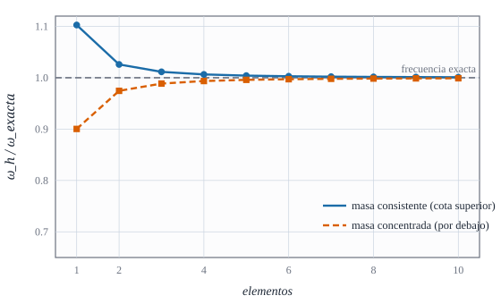

Fuerzas nodales equivalentes, peso propio con espesor, masa consistente y masa concentrada

Figura 29.1: Primera frecuencia de una barra empotrada–libre calculada con la masa consistente (azul), siempre por encima de la exacta, y con la masa concentrada (naranja discontinuo), por debajo, frente al número de elementos. Ambas convergen. Cálculo calculado con matrices de \(2\times2\).
Cómo se traduce una carga repartida (o el propio peso de la lámina) a fuerzas en los nodos, y cómo se reparte la masa para poder calcular frecuencias
Objetivos y prerrequisitos
Objetivos. Al terminar el tema sabrás:
obtener el vector de cargas consistente de una carga superficial y comprobar que reparte el total correctamente;
escribir el peso propio de una lámina con su espesor, incluida la corrección por curvatura;
construir la matriz de masa consistente a partir de la energía cinética y reconocer sus términos;
comparar masa consistente y concentrada y saber cuál sobrestima y cuál subestima las frecuencias;
verificar la masa total y el peso total de una malla.
NotaExplicación para ingenieros: la manta sobre los cuatro apoyos
Una carga repartida sobre un elemento es como un peso apoyado sobre una manta tensa sujeta por sus cuatro esquinas: cada esquina soporta la parte que le corresponde por cercanía. Las funciones de forma son esa regla de «cercanía»: un punto cerca del nodo 1 le manda casi toda su carga y poca a los demás. Con una presión uniforme sobre un rectángulo cada nodo recibe un cuarto del total. La masa se reparte igual: la masa consistente la distribuye con la misma regla y la concentrada la «aparca» directamente en los nodos, como pesas colgadas de las esquinas.
29.1 Cargas consistentes
La carga de un elemento es el trabajo virtual de las fuerzas exteriores. Para una carga por unidad de superficie media \(\mathbf f\), y con el desplazamiento virtual \(\delta\mathbf u=\delta u_\alpha\mathbf a^\alpha+\delta u_3\hat{\mathbf n}\):
donde \(\mathbf T\) lleva \(u_1,u_2,u_3\) de los nodos a los valores interpolados (con las funciones \(N_k\)). Es el mismo \(\int\mathbf N^{\mathsf T}\mathbf b\,dx\) de la barra (E1), en dos dimensiones y con la geometría de la superficie. Los giros no reciben carga: una fuerza superficial no hace trabajo en \(\delta\varphi\).
Ejemplo 29.1 (Ejemplo resuelto: presión sobre un elemento plano) Elemento plano de \(100\times50\) mm con una presión uniforme \(p=0{,}01\) N/mm² en dirección \(-z\). Entonces \(\mathbf a^\alpha\!\cdot\mathbf f=0\) y \(\hat{\mathbf n}\!\cdot\mathbf f=-p\) (con \(\hat{\mathbf n}=+\hat{\mathbf z}\)). Con \(N_k\) bilineales y \(\int_AN_k\,dA=A/4\): \[
F_{3k}=\int_AN_k\,(-p)\,dA=-\frac{pA}{4}=-\frac{0{,}01\cdot5000}{4}=-\mathbf{12{,}5}\ \text{N}\quad(k=1,\dots,4),
\] y los demás términos, nulos. La suma (\(50\) N) es la fuerza total aplicada. Resultado analítico; la práctica lo reproduce con cargas_elemento.
En el Ejemplo 29.1, ¿qué fuerza (en valor absoluto) recibe cada nodo?
\(|F_3|=pA/4=0{,}01\cdot5000/4=12{,}5\) N.
AdvertenciaDos puntos que suelen confundir
«Consistente» no es «repartir a partes iguales». En un elemento rectangular con carga uniforme sí coincide, pero en uno distorsionado o con carga variable el reparto es otro; lo da la integral ecuación 29.1.
Los g.d.l. son covariantes: \(F_{1},F_{2}\) son trabajos por unidad de \(u_1,u_2\) (no fuerzas cartesianas). Para un elemento curvo, el total de fuerza se recupera sumando \(\delta_{\text{rígido}}^{\mathsf T}\mathbf F\), con la traslación rígida expresada en esos g.d.l.
29.2 Peso propio de una lámina
El peso es una fuerza por unidad de volumen, \(\mathbf X=\rho\,\mathbf g\). Para pasarlo a carga superficial hay que integrar en el espesor, con el factor de volumen \(\mu=1-2H\theta^3+K(\theta^3)^2\) del tema C3 y el desplazamiento virtual de la hipótesis cinemática \(\delta\mathbf u_{3D}=(\delta u_\rho+\theta^3\delta\varphi_\rho)\mathbf a^\rho+\delta u_3\hat{\mathbf n}\):
Se obtiene con los momentos \(\int\mu\,d\theta^3=t(1+Kt^2/12)\) y \(\int\theta^3\mu\,d\theta^3=-Ht^3/6\), descomponiendo \(\mathbf X\) en la base de la superficie media (por eso \(X^\rho\) y \(X^3\) no dependen de \(\theta^3\)). En el orden cero,
con error relativo \(O\bigl((t/R)^2\bigr)\): es la carga superficial \(\mathbf f=t\,\mathbf X\) de ecuación 29.1. Los términos con \(K\) y con \(\delta\varphi\) sólo importan si la lámina es gruesa respecto de su radio de curvatura.
AdvertenciaCorrección respecto de unos apuntes previos
La expresión de partida de unos apuntes previos del autor (con un factor \(\mu^\rho_\alpha\) multiplicando las componentes del peso en la base de la superficie media) no reproduce el trabajo de un peso uniforme: para \(t/R=0{,}1\) el error relativo es \(\sim10^{-4}\) en cilindro, esfera e hypar. La versión ecuación 29.2 se ha derivado de nuevo y se ha comprobado numéricamente (error relativo \(\sim10^{-16}\) en las tres superficies, con \(t=0{,}2\) y \(0{,}05\)). Limitación: la comprobación usa la misma cinemática; no contrasta que sea la del elemento de otros autores.
En el orden cero de ecuación 29.2, el peso propio de la lámina sólo carga los desplazamientos \(\delta u_\rho\) y \(\delta u_3\), no los giros \(\delta\varphi_\rho\).
Verdadero. El acoplamiento con los giros, \(-\tfrac{Ht^3}{6}X^\rho\delta\varphi_\rho\), es \(O\bigl((t/R)^2\bigr)\) frente al término principal y se descarta.
29.3 Matriz de masa
La energía cinética de la lámina, con el mismo desplazamiento 3D y el desarrollo exacto de \(\mu\), es
con \(|\dot{\mathbf u}|^2=a^{\alpha\beta}\dot u_\alpha\dot u_\beta+\dot u_3^2\), \(|\dot{\boldsymbol\vartheta}|^2=a^{\alpha\beta}\dot\varphi_\alpha\dot\varphi_\beta\) y \(\dot{\mathbf u}\cdot\dot{\boldsymbol\vartheta}=a^{\alpha\beta}\dot u_\alpha\dot\varphi_\beta\). Interpolando con \(N_k\), \(T=\tfrac12\dot{\boldsymbol\delta}^{\mathsf T}\mathbf M_e\dot{\boldsymbol\delta}\), con
\[
\mathbf M_e=\rho\int_A\Bigl[(t+\tfrac{Kt^3}{12})\,\mathbf N_u^{\mathsf T}\mathbf a^{-1}\mathbf N_u+\ldots\Bigr]dA\qquad(\text{inercia de traslación, de acoplamiento y rotatoria}).
\tag{29.5}\]
Tres bloques: traslación (\(\rho t\) por la métrica inversa en \(u_1,u_2\) y por 1 en \(u_3\)), rotatoria (\(\rho t^3/12\) en los giros) y acoplamiento (proporcional a \(H\), pequeño). Con la integración \(2\times2\) el programa la forma exactamente y es la misma energía de la que sale la matriz de rigidez en ecuación 28.1: \(\mathbf M\) es simétrica y semidefinida positiva.
Ejemplo 29.2 (Ejemplo resuelto: la masa de un elemento) Elemento de acero sobre un cilindro de \(R=0{,}5\) m, de \(0{,}1\) m de longitud axial y \(0{,}1\) rad de abertura, con \(t=5\) mm y \(\rho=7850\) kg/m³. Una traslación axial rígida unidad (\(u_1=1\) en los cuatro nodos) debe dar \(\boldsymbol\delta^{\mathsf T}\mathbf M\boldsymbol\delta=m\) (la masa total). Como \(K=0\) en el cilindro, \(m=\rho\,t\,A=7850\cdot0{,}005\cdot(0{,}1\cdot0{,}5\cdot0{,}1)=\mathbf{0{,}19625}\) kg, con \(A=0{,}005\) m². Resultado analítico; la práctica lo obtiene con masa_elemento.
En el Ejemplo 29.2, ¿cuánto vale la masa del elemento?
\(m=\rho tA=7850\cdot0{,}005\cdot0{,}005=0{,}19625\) kg.
29.4 Masa concentrada y comparación
La masa concentrada (diagonal) se obtiene colocando en cada nodo \(\rho tA/4\) de masa (y la inercia rotatoria que corresponda), sin acoplamientos. Con la misma malla da frecuencias por debajo de las exactas, y la consistente por encima (Figura 29.1). Para una barra:
NotaExplicación para ingenieros: ¿cuál uso para calcular frecuencias?
Consistente: da cota superior de las frecuencias (el modelo es algo más rígido que la realidad); suele converger más rápido y es la preferible para analizar modos.
Concentrada: es diagonal (se resuelve con más rapidez en cálculos en el tiempo con pasos explícitos), da una cota inferior y no necesita integrar nada.
Truco: una media de ambas suele estar muy cerca de la frecuencia exacta.
Con la misma malla de elementos de barra lineales, ¿qué cota dan las frecuencias de la masa consistente respecto de las exactas?
Cota superior (valores iguales o mayores)
Cota inferior (valores iguales o menores)
Pueden ser mayores o menores según el modo
Son exactas en todos los modos
Cota superior: el espacio de interpolación restringe el movimiento (principio del mínimo de Rayleigh), y la masa consistente conserva la energía cinética del campo interpolado, de modo que \(\omega_h\ge\omega\) (Figura 29.1).
TipAplicación real: cubiertas y cráneos bajo cargas dinámicas
ilustrativo El análisis modal de una cubierta o de una torre de refrigeración es el paso previo a estudiar su respuesta a viento y sismo: se necesita la masa real de la lámina (incluido el peso propio como carga estática) y sus frecuencias. En biomecánica, el mismo problema aparece al estimar las frecuencias propias de huesos o de la cavidad craneal bajo impacto. Idea de aplicación sin fuente verificada: es una orientación, no una cita.
29.5 Práctica guiada en Julia
TipEjemplo computacional
calculado (1) La carga de presión del Ejemplo 29.1 y la masa del Ejemplo 29.2 con cargas_elemento y masa_elemento. (2) El peso total de un cuarto de cilindro de radio \(R=0{,}5\), longitud 1 y \(t=0{,}01\) (carga \(\mathbf f=t\mathbf X\), con \(\mathbf X=(0,0,-1)\)), y su convergencia a \(0{,}01\cdot R\cdot\pi/2\) al refinar la malla.
usingGeometria, LinearAlgebra# (1) Presión sobre un elemento plano de 100×50 mmXp = [0.01001000; 005050]F =cargas_elemento(placa_oblicua(π/2), Xp, θ -> [0, 0, -0.01])# Masa de un elemento de cilindro (SI): traslación axial rígidaR =0.5; r = θ -> [θ[1], R *sin(θ[2]), R *cos(θ[2])]X = [0.00.10.10; 000.10.1]M =masa_elemento(r, X, 7850.0, 0.005)δ =zeros(20); for k in1:4; δ[5(k-1)+1] =1.0; end(F_nodos_w = F[[3, 8, 13, 18]], masa = δ' * M * δ, esperada = 7850 * 0.005 * 0.005)
# (2) Peso total del cuarto de cilindro: δ_rígidoᵀ F frente al valor exactofunctionpeso_total(n) nodos, conn =malla_rectangular((0, 1.0), (0, π/2), n, n) _, _, Fg =ensamblar(r, nodos, conn, 1e3, 0.3, 0.01; f = θ -> [0, 0, -0.01]) # f = t·X δz =zeros(5size(nodos, 2))for k in1:size(nodos, 2) g =geometria_punto(r, nodos[:, k]); u = [0.0, 0.0, 1.0] δz[5(k-1)+1:5(k-1)+2] = g.A'* u; δz[5(k-1)+3] =dot(g.n, u)end δz'* Fgend[(n = n, peso =peso_total(n), exacto =-0.01* R *π/2) for n in (2, 4, 8)]
El peso converge cuadráticamente (\(5\,\%\to1{,}3\,\%\to0{,}3\,\%\)): la traslación rígida expresada en componentes covariantes sólo se representa bien con elementos pequeños (aviso de E3).
29.6 Ejercicios
Carga lineal. Un elemento de barra de longitud \(h\) con carga \(b(x)=b_0\,x/h\) (cero en el nodo 1, \(b_0\) en el 2). Obtén \(\mathbf f_e\).
NotaSolución
\(f_1=\int_0^h b_0\frac xh\,(1-\tfrac xh)\,dx=b_0h/6\), \(f_2=\int_0^h b_0\frac xh\cdot\frac xh\,dx=b_0h/3\). Suman \(b_0h/2\) (el área del triángulo): el nodo más cargado recibe más.
Frecuencia de un elemento. Barra de un elemento, empotrada en el nodo 1 y masa consistente: ¿qué frecuencia da? Compárala con la exacta \(\tfrac\pi2\sqrt{E/\rho}/L\).
NotaSolución
\(K=EA/L\) y \(M=\rho AL/3\) (sólo el término del nodo libre de \(\tfrac{\rho AL}6\cdot2\)): \(\omega=\sqrt{3E/\rho}/L=1{,}732\sqrt{E/\rho}/L\) frente a \(1{,}571\): un 10 % por encima (primer punto de la Figura 29.1).
Masa rotatoria. ¿Por qué el término rotatorio es proporcional a \(t^3\)?
NotaSolución
Es el momento de inercia de la sección por unidad de longitud: \(\int\rho(\theta^3)^2d\theta^3=\rho t^3/12\). Para láminas delgadas es despreciable frente a \(\rho t\); en láminas gruesas y a frecuencias altas puede importar.
La doy por superada si…
Escribo ecuación 29.1 y reparto una presión uniforme entre los cuatro nodos.
Obtengo el peso propio de una lámina y sé qué se desprecia en el orden cero.
Reconozco los tres bloques de la matriz de masa ecuación 29.5.
Digo que la masa consistente da cota superior y la concentrada inferior.
Compruebo la masa total y el peso total de una malla.
NotaFuentes, correcciones y qué queda pendiente
Fuentes. Texto autónomo: la forma de ecuación 29.2 y ecuación 29.4 es una derivación propia con el desarrollo exacto de \(\mu\) (verificada numéricamente), no tomada de ninguna publicación; las cargas consistentes y las masas consistente/concentrada son estándar (Bathe 1996; Hughes 1987; Zienkiewicz y Taylor, s. f.).
Corrección registrada. La expresión de fuerzas de volumen de unos apuntes previos del autor, marcada por él mismo como errónea, se sustituye por ecuación 29.2.
Qué queda pendiente. El convenio de signo y orientación de los giros \(\varphi_\rho\) (de él depende el acople con \(H\)); el uso de componentes físicas en bases no ortogonales; no hay nota histórica en este tema por falta de fuente verificada; la «Aplicación real» es una orientación sin fuente.
Zienkiewicz, O. C., y R. L. Taylor. s. f. The Finite Element Method. Butterworth-Heinemann.
Hughes, T. J. R. 1987. The Finite Element Method: Linear Static and Dynamic Finite Element Analysis. Prentice-Hall.
Bathe, K. J. 1996. Finite Element Procedures. Prentice Hall.
Referencias
Son las mismas que aparecen en el margen, junto al texto.
Bathe, K. J. 1996. Finite Element Procedures. Prentice Hall.
Hughes, T. J. R. 1987. The Finite Element Method: Linear Static and Dynamic Finite Element Analysis. Prentice-Hall.
Zienkiewicz, O. C., y R. L. Taylor. s. f. The Finite Element Method. Butterworth-Heinemann.